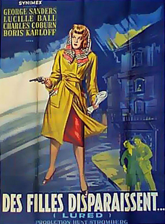
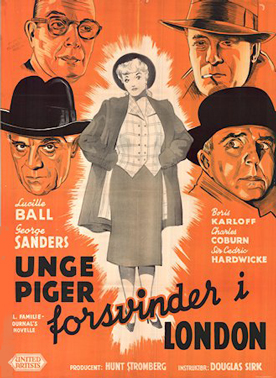
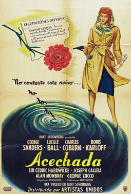

Lured
George Sanders
Charles Coburn
Sir Cedric Hardwicke
Alan Mowbray
Robert Coote
Ethelreda Leopold
SYNOPSIS
A killer lures lonely young women via the "personals" column in a London newspaper. A friend of one of the victims, an attractive dancer named Sandra Carpenter (Lucille Ball), acts as bait to catch the killer, under direction of Police Inspector Temple (Charles Coburn). One of the suspects is Robert Fleming (George Sanders) who may, or may not, be the killer. Fleming, suave and sophisticated, charms Carpenter into romantic complications.
The title was changed to "Personal Column" midway through the original U.S. theatrical release because staff at the Production Code Administration thought the word "lured" sounded too much like "lurid". Director Douglas Sirk felt the title change confused potential audiences and led to the film's box-office failure.
Film critic Dennis Schwartz gave the film a mixed review, writing, "The flawed film never settles into a dark and sinister mood (filmed in a Hollywood studio) but succeeds only in keeping things tension-free and lighthearted with continuous breezy comical conversations as Ball does a sturdy Nancy Drew turn at sleuthing with her comical detective partner Zucco (who knew the usually typecast villain could be so amusing!). It can't quite measure up to compelling film noir, but it's pleasing and easy to handle despite everything feeling so contrived and confining."


